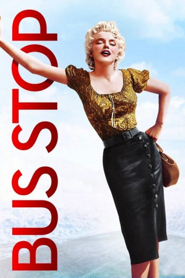
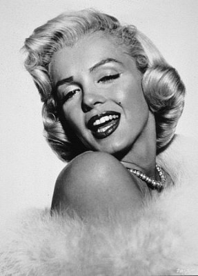
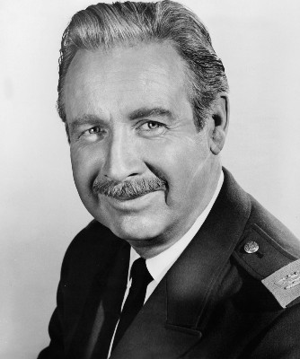

#4069 Bus Stop
Auszeichnungen: für 1 Oscars nominiert
 
 IMDB-Wertung: 6.7 / 10
IMDB-Wertung: 6.7 / 10  Tomatometer: 79
Tomatometer: 79  Metascore: 0
Metascore: 0 
Der junge, unerfahrene Cowboy Bo aus Montana kommt zum Rodeo nach Phoenix und nutzt die Gelegenheit, um auf Brautschau zu gehen. In einer zweitklassigen Bar begegnet er der attraktiven Cherie, die dort als Sängerin arbeitet, und beschließt spontan, sie zu heiraten. Cherie ist von dieser Idee zunächst nicht sonderlich angetan, woraufhin Bo sie kurzerhand entführt. Als er nicht müde wird, sie mit seinen Liebesschwüren zu bedrängen, und sich sogar für sie verprügeln läßt, willigt sie schließlich ein, seine Frau zu werden.
Jahr: 1956
Dauer: 94 Minuten
FSK: 12
Land: USA Studio: 20th Century FoxTonspuren:
Untertitel:
Auflösung: 1080p (1920x752) Größe: 7833 MB
Genre: Komödie, Drama, Liebe
Regisseur: Joshua Logan
Drehbuch: Burt Kennedy
Soundtrack:
Darsteller:
-  Marilyn Monroe als Chérie
- Don Murray als Beauregard 'Bo' Decker
-  Arthur O'Connell als Virgil Blessing
- Betty Field als Grace
- Eileen Heckart als Vera
- Robert Bray als Carl
 Hope Lange als Elma Duckworth
Hope Lange als Elma Duckworth Hans Conried als Life Magazine Photographer
Hans Conried als Life Magazine Photographer Max Showalter als Life Magazine Reporter
Max Showalter als Life Magazine Reporter- Ed Fury als Cowboy in Saloon , uncredited
 David McMahon als Ticket Taker at Bus , uncredited
David McMahon als Ticket Taker at Bus , uncredited- Del Moore als Man at Rodeo , uncredited
- George Selk als Elderly Passenger , uncredited
- Greta Thyssen als Cover Girl , uncredited
- Arizona State University Sun Devil Marching Band als Themselves
- Linda Brace als Evelyn , uncredited
- Mary Carroll als Cashier , uncredited
- J.M. Dunlap als Orville , uncredited
- Buddy Heaton als Clown , uncredited
- Fay L. Ivor als Rodeo Usher , uncredited
- Richard Culvert Johnson als Messenger , uncredited
- Terry Kelman als Gerald , uncredited
- Lucille Knox als Blonde on Street , uncredited
- Pete Logan als Announcer , uncredited
- Kate MacKenna als Elderly Passenger , uncredited
- Jack Martin als Rodeo Cowboy , uncredited
- Helen Mayon als Landlady , uncredited
- Phil J. Munch als Preacher , uncredited
- Jim Katugi Noda als Japanese Cook , uncredited
- James O'Rear als Mr. Foster , uncredited
- Norman Papson als Bar Patron , uncredited
- Wilbur Plaugher als Clown , uncredited
- Edward G. Robinson Jr. als Cowboy , uncredited
- William Schub als Messenger , uncredited
- Henry Slate als Manager of Blue Dragon Nightclub , uncredited
- Bill Stanberry als Skinny Bull Rider , uncredited
- Casey Tibbs als Himself , uncredited
Datei: X:\1950-1959\Bus Stop (1956, FSK12, 1920x752).mkv seit 19.07.2016
Festplatte: HD 1900-1970
 Es gibt insgesamt 141 Filme in der Gruppe '1950-1959'
Es gibt insgesamt 141 Filme in der Gruppe '1950-1959'